DLC's
PAYDAY 2 tiene mas de 50 DLC's, son muchos.
En caso que desees ahorrar y ver cuales valen la pena. Te dejo un listado:
Gage Mod Courier
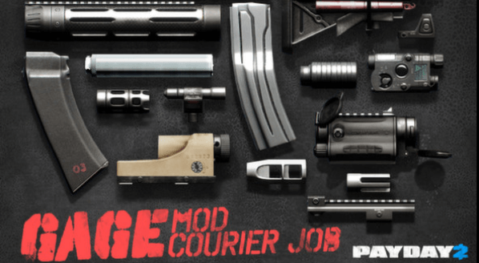Nos ofrece modificaciones para casi todas las armas del juego.
Miras,Lasers,Boquillas,Supresores,etc.
Este DLC es el primero que deberias adquirir, y es ultra barato.
Para conseguir las modificaciones debes recolectar los paquetes de Gage.
Los cuales estan escondidos en el mapa de todas las misiones, recolecta cierta cantidad y
recibiras tu recompensa.
The Butcher's BBQ Pack
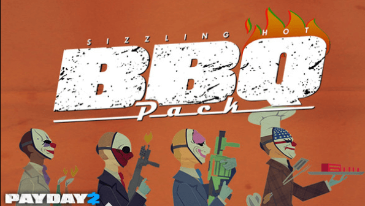Este DLC te ofrece un lanzallamas, lanzagranadas, bomba molotov y balas incendiarias para
escopetas.
Es uno de los mejores DLC's por las balas incendiarias, que con ciertas escopetas son letales y
ayuda mucho en dificultades altas.
Wolf Pack
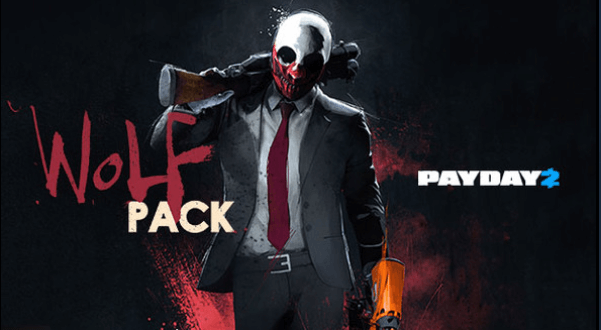Ademas de darte 2 misiones muy buenas del primer PAYDAY, te da un lanzagrandas.
Este langranadas tiene la capacidad de disparar hasta 3 granadas seguidas y es el unico
lanzagranadas que hace criticos (esto mas bien es un bug sin arreglar).
Sydney Caracter Pack
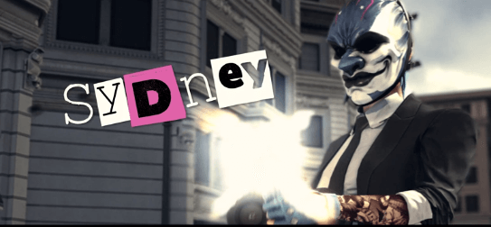Tiene uno de los mejores talentos, ANARQUISTA.
Este talento pasa una parte de tu vida a blindaje y regeneras tu blindaje haciendo daño a
enemigos.
Otro personaje que recomiendo es Clover Caracter Pack
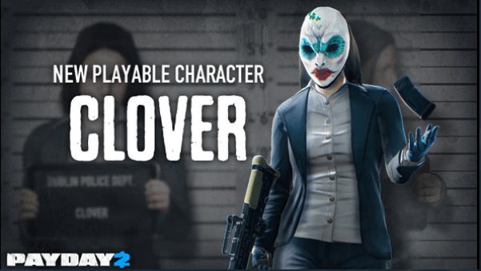Su talento LADRON es el unico talento destinado al sigilo.
Si no tienes problema en gastar más dinero, compra la Legacy Collection y tendras
todos los DLC's.
Solo aquellos DLC's de que salieron 2018 hacia abajo, los DLC's que salieron en 2020-2021 se
compran aparte.
MODS
Los MODS son modificaciones hechas por jugadores para jugadores.
Tenemos modificaciones visuales, sonidos, musica, interfaz, optimización, etc.
Para instalar mod en PAYDAY2 necesitas de SUPER BLT.
Su instalación es ultra sencilla, mueve el archivo a la carpeta raiz del juego y luego ejecuta
PAYDAY2.
CLICK AQUI para
descargarlo.
Una vez hecho el proceso, todos aquellos mods que sean BLT se instalan arrastrandolo a la carpeta
"mods".
Esta de ubica en la carpeta raiz de tu PAYDAY2
MODS OVERRIDES
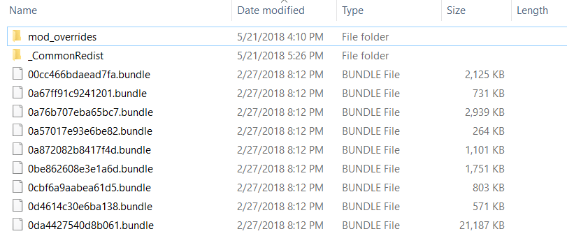
Los MODS OVERRIDES son aquellos mods que cambian texturas o reemplazan/introducen
musica.
Al igual que con los mods BLT, arrastra la carpeta del mod a "mod_overrides" y listo (en caso
que no tengas la carpeta,creala).
BEARDLIB
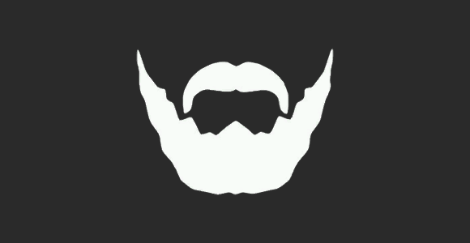
Es un mod BLT que nos ayuda a la hora de instalar nuevos mapas, soundtracks, etc.
Dato: Para instalar mapas nuevos, metelos en la carpeta "maps" que
creeara el mod.
CLICK AQUI para
descargarlo.
MODS QUE RECOMIENDO
Dejo un listado de mods que más recomiendo, ya sea por que optimizan y mejoran el gameplay o simplemente son geniales
MUI HUD
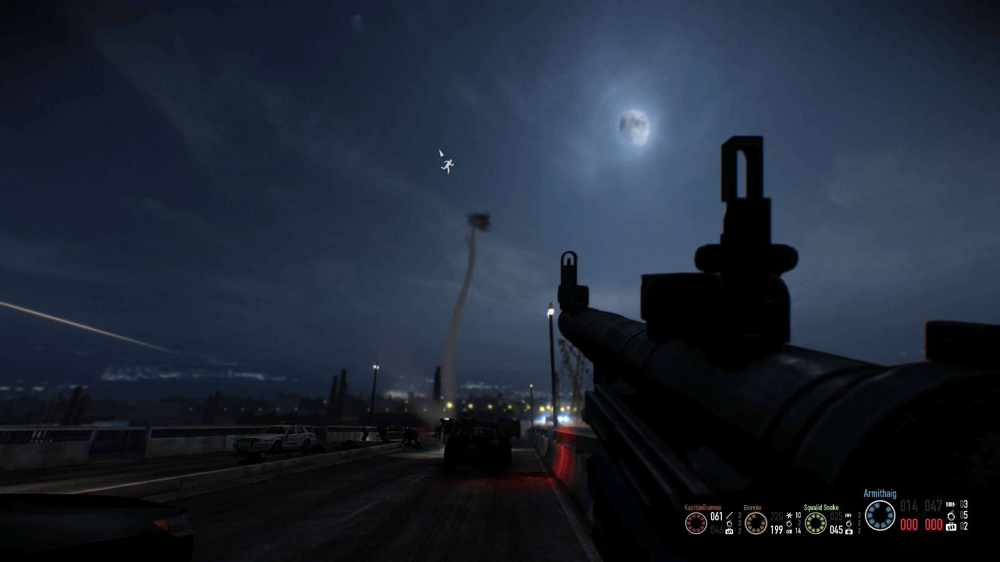Si la HUD por defecto te disgusta, MUI HUD es tu mejor amigo.
Una HUD mucho mas minimalista, con poca y justa información en pantalla y totalmente
configurable (La recomiendo para gente que ya sabe jugar).
CLICK AQUI para descargarlo.
ITER
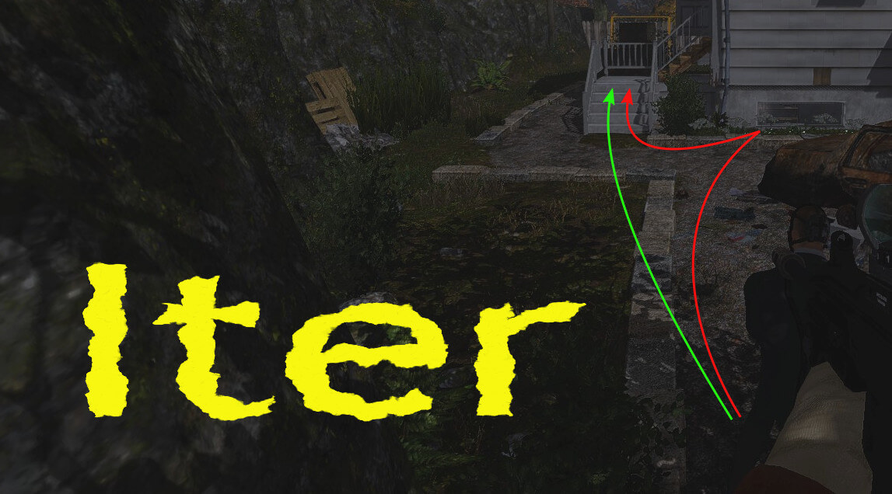Optimiza la IA para que haga un mejor recorrido en los mapas.
Como bonus extra, mejora enormemente el rendimiento de la mision de defender el refugio.
CLICK AQUI para descargarlo.
HOXHUD DAMAGE POPUP
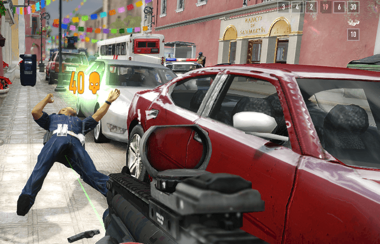Muestra el daño que haces a los enemigos en forma de Popup.
Compatible con cualquier otra HUD y muy util.
CLICK AQUI para descargarlo.
MORE WEAPON STATS
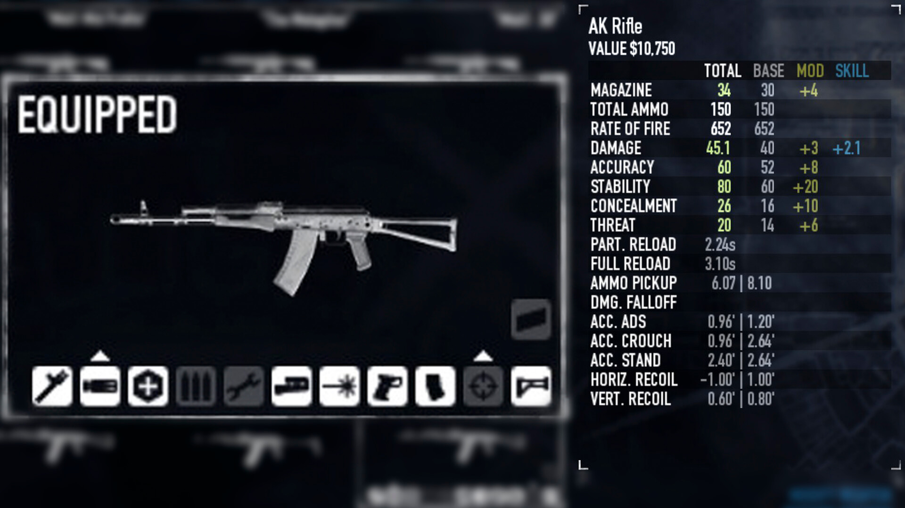Muestra muchas mas información de las armas, como la recogida de munición, tiempo de recarga,
etc.
Este mod es muy util cuando quieres elegir el arma perfecta para tu build.
CLICK AQUI para
descargarlo.
MAP BASED OPTIMIZATIONS
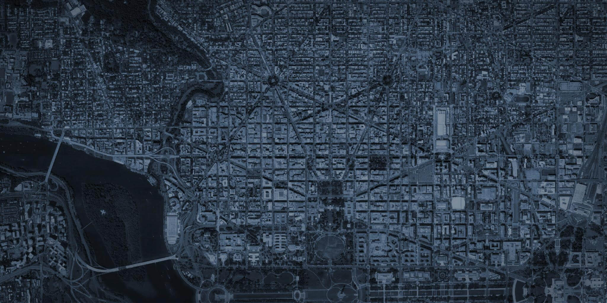Optimiza los mapas añadiendo portales en estos (borra las zonas que no vemos o estamos muy
alejados).
Puede ser de gran ayuda para mejorar el rendimiento del juego.
CLICK AQUI para
descargarlo.
Estos son mods que yo recomiendo, pero hay miles que pueden servirte o gustarte.
Visita esta pagina para ver muchos más mods: Mod Workshop